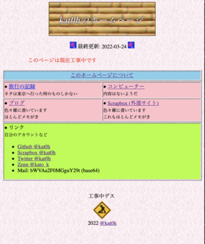
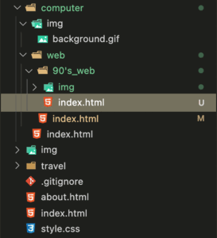
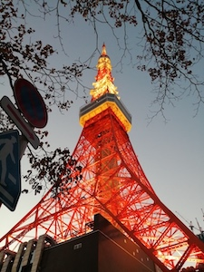

|
思いつきで90年代風個人サイトを再現してみようと色々試してみたところ想像以上に楽しかったので共有します ● 前提 当時を生きていないので詳しいことは分かりません！インターネットで手に入れた付け焼き刃の知識です。 90年代後半から2000年台初頭の個人ホームページを再現することを目標にします。 70年代の音楽をYoutubeで聴きながら調べているので雰囲気だけはバッチリです。 |
 |
完全に主観ですが、1995年ごろのインターネットホームページは自分の家など建物に例えられることが多いように感じます。
ホームページに入ると「ようこそ」の文字が大きく表示され、家主は実際の家のように装飾をする...趣味のページであればバーチャル博物館といった表現もよくされました。
相互リンクといったホームページ管理人同士のネットワークが形成されました。
相互リンク制度はちょうど現在のTwitterでいうところのフォローに近いようで当時のブログなどを見ると、「自分のサイトがリンクされたが返すべきか」といった悩みも見られます。
今ではそうそう見られませんが、リンクを貼ることに許可を必要とする風潮もありました。
参考
|
個人ホームページとブログシステムの最大の違いがページ構造です。 ブログシステムでは記事は全て同列に扱われ、ジャンルの整理はタグによって行われます。個人ホームページの場合、サイトは木構造に管理されます。これはHTMLファイルを配置したディレクトリ構造そのままです。 整理の手間がありますが、見せたい情報を前に出すことができるなど、柔軟に管理できます。 |
 |
当時HTMLは十分に仕様が共有されていたわけではなくブラウザベンダが各々独自の仕様を採用していたため、ブラウザによって表示が変わってしまうなどの不都合がありました。
これを受けてW3Cが1994年に活動を始めWebの標準化を進めようとしてきましたが、ブラウザの独自仕様は長くにわたって引き継がれてます。
ページの下部にブラウザーの動作状況を記載しておくのはこのためです。動作要件に記載されることの多い情報は以下の通りです。
| ブラウザー | 当時はIE・Netscapeなどが人気でした。同じブラウザでもバージョンごとに挙動が異なるのでたくさん書いてあると親切です |
| Javascript使用状況 | Netscape発祥のJavscriptですが、標準化が進んでいない時代なのでまだまともに利用できません。 |
| スタイルシート | HTMLは文書の構造だけでなく装飾の情報も含みます。CSSのようなナウい規格は使いません。 |
| モニタサイズ |
VGA(640*480)/SVGA(800*600)あたりが主流です。基本的にモニタサイズは気にする必要がありませんが(はみ出しは味です)、宣伝用ホームページなど細かくレイアウトが決められているページの場合重要になります。 こちらのページのようにモニタサイズに合わせたレイアウトになっています。 |
| 色のbit数 | 画面の発色数です。16bit以上の表示を想定しているサイトが多いような気がします. |
| このサイトは最新版のGoogle Chrome、Apple Safari、Mozilla Firefoxで表示を確認しています。CSS/Javascriptがオフになっている場合は一部のページ要素がうまく表示されない場合があります。モニターはVGA以上、カラーモード24bitでの表示を想定しています。 |
HTMLはメモ帳で書き、Shift-JISで保存します。(このサイトはVSCodeでUTF-8エンコーディングで書いていますが...)
文章と装飾は分離しません。HTML2.0には多くの装飾用タグがあるのでこれらを活用しましょう。
| h1~6: 見出し | br: 改行 | hr: 水平区切り線 | a: リンク | img: 画像 |
| ul: 箇条書き | dl: 定義リスト | b: 太字 | i: 斜体 | tt: 等幅 |
| address: 連絡先 | blockquote: 引用 | code/pre: ソースコード | em: 強調 | kbd: キー操作 |
| strong: 強調 | table: 表・レイアウト |
HTMLを手書きする時にネックになるのが繰り返しの出現です。
ヘッダやサイドバーのリンク集など何度も同じ要素が出てくる場合、HTMLファイルを分割してframeタグで表示します。
+-----------------------------------+ |header | +-----+-----------------------------+ |links| | | | frame | | | ここだけ切り替える | | | | | | | | | | +-----+-----------------------------+ ...Chromeは等幅フォントを正しく描画できません
|
透過可能な画像のフォーマットはGIFがメジャーです。 CGをページに載せる場合はGIF画像を使用しましょう。200x200以下のサイズが自然です。 デジタルカメラで撮影した写真はその限りではありません。 |
100x83 5KB |
|
1995年ごろから普及し始めたコンパクトデジタルカメラの画素数は30~50万画素程度です。 例えば1996年に発売されたカシオ計算機のQV-300は、 30万画素のイメージセンサと4MBのメモリーを備えていて、640x480の画像を64枚(一枚62KB程度)、320x240の画像を192枚(20KB)撮影・保存することができます。 ブロードバンド接続が普及するのが2000年に入ってからのようなので、ダイアルアップの速度を考慮すると...(ダイアルアップなんて使ったことないのに書けるかいな)10数KBの画像を数枚載せる程度が現実的です。 |
 ↑225x300 52KB |
HTMLを手書きした場合でも、ホームページ作成ソフトを使った場合でも、完成したファイルをサーバーへ転送する必要があります。FTPソフトにはFFFTPがよく使われました。
ちなみにこのサイトはGithub上にあるリポジトリから、Cloudflare Pagesを用いて配信しています。変更履歴はGitで追跡され、リモートリポジトリへのpushをトリガーに即デプロイされます。
ホームページに訪問してきた人数を記録するためにアクセスカウンターを設置します。
多くはCGIスクリプト製で、アクセスカウンターを設置できるHTMLタグを提供するサイトもあります。
これらに注意すると古風なWebサイトを作成することができます
| 更新日時 |
|
||
| 装飾 | GIFアニメーションやmarqueeタグなどページに動きをつけるタグを多用します。 | ||
| 複雑な装飾は画像で | 今はCSSで実現するような角丸などのデザインは画像で行います | ||
| ページ下部のトップへのリンク |
|
||
| New! | 最近更新された記事へのリンクにはNew!マークを貼り付けておきましょう | ||
| 背景 | 小さなGifイメージをタイル状に並べてページの背景にします | ||
| font | 文字色や文字サイズの変更 | ||
| 空白画像 | 何もない要素を作りたい時や、スペースを微調整したいときは透明なGif画像を使いましょう |